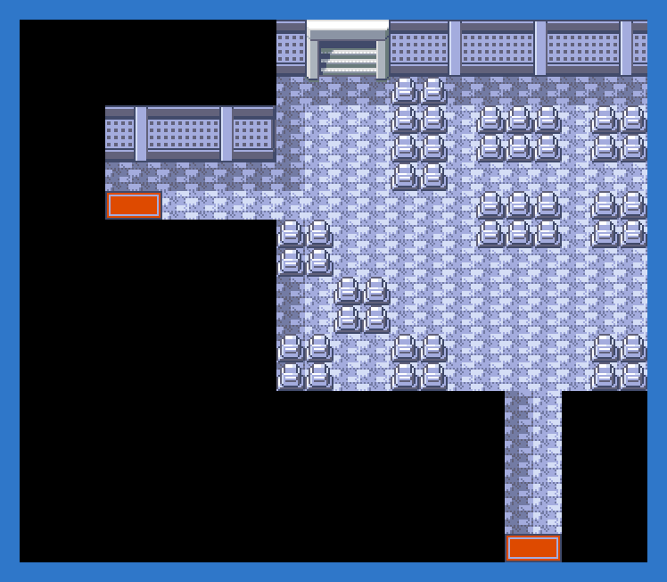

PokémonEMMA'S EMERALD
OFFICIAL Strategy Guide
Mt Pyre 1F
TIP
Wild Pokémon here are LV22–29. Time of day: M = morning (6–10), D = day (10–19), E = evening (19–20), N = night (20–6).
Event 1: Inside the tower
Ghost types and mourners. The Cleanse Tag is on 4F. The summit is reached from the exterior path.
Catch ’Em All! Grass & caves
 | Shuppet: | LV27 | Common | MDEN |
 | Woobat: | LV23 | Uncommon | MDEN |
 | Misdreavus: | LV23–26 | Uncommon | MDEN |
 | Galarian Ponyta: | LV25–27 | Uncommon | MDEN |
 | Solrock: | LV24–29 | Uncommon | MDEN |
 | Hisuian Qwilfish: | LV23–25 | Uncommon | MDEN |
 | Absol: | LV23–25 | Uncommon | MDEN |
 | Seviper: | LV28–29 | Uncommon | MDEN |
 | Indeedee (M): | LV25–27 | Uncommon | MDEN |
 | Girafarig: | LV23–24 | Uncommon | MDEN |
 | Alolan Raticate: | LV25–26 | Uncommon | MDEN |
 | Drifloon: | LV26 | Uncommon | MDEN |
 | Thievul: | LV26 | Uncommon | MDEN |
 | Liepard: | LV25–26 | Uncommon | MDEN |
 | Duskull: | LV22–23 | Uncommon | MDEN |
 | Galarian Corsola: | LV25–27 | Uncommon | MDEN |
 | Hisuian Sneasel: | LV26–29 | Uncommon | MDEN |
 | Morpeko (Full Belly): | LV24 | Uncommon | MDEN |
 | Sableye: | LV26–27 | Uncommon | MDEN |
 | Floette (Red): | LV22–23 | Uncommon | MDEN |
 | Klefki: | LV25–26 | Uncommon | MDEN |
 | Lunatone: | LV23–27 | Rare | MDEN |
 | Espurr: | LV28 | Rare | MDEN |
 | Spritzee: | LV25 | Rare | MDEN |
 | Cleffa: | LV27–29 | Rare | MDEN |
 | Fidough: | LV27 | Rare | MDEN |
 | Milcery: | LV23–25 | Rare | MDEN |
 | Dedenne: | LV28–29 | Rare | MDEN |
 | Swirlix: | LV26–27 | Rare | MDEN |
 | Stantler: | LV26–27 | Rare | MDEN |
 | Snubbull: | LV25–27 | Rare | MDEN |
62
Walkthrough